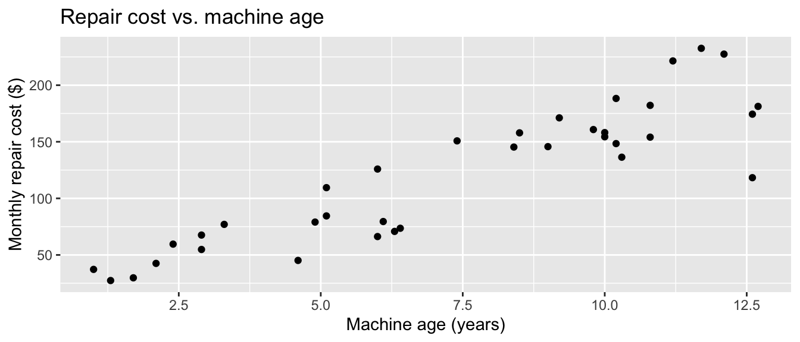
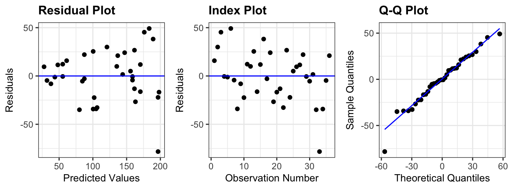
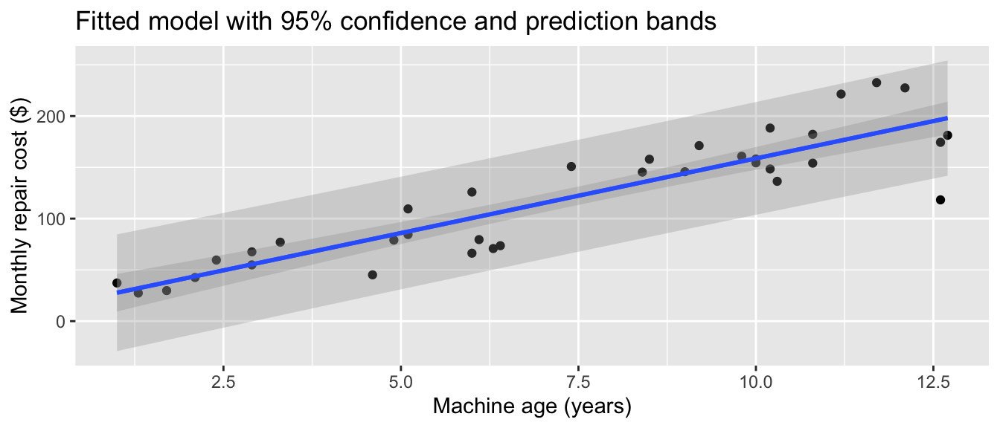

| age | repair_cost |
|---|---|
| 3.3 | 77.01 |
| 7.4 | 150.81 |
| 11.2 | 221.47 |
| 2.9 | 54.84 |
| 2.1 | 42.54 |
| 11.7 | 232.59 |
Stat230-F26 | Quiz 1 Retake
Name:
Time: 30 minutes. This is a retake of Quiz 1, intended to let you demonstrate improved understanding of the same core ideas: residual standard error, confidence/prediction intervals for predictions, and the LINE conditions. The data below is simulated, not real.
By signing below, you pledge that the work on this quiz is entirely your own, and that you have neither given nor received unauthorized assistance.
Signature:
The data
A local chain of coffee shops tracks the age (in years) of each of its 36 espresso machines and that machine’s average monthly repair cost (in dollars) over the past year. The company wants to understand how repair cost tends to change as machines age, and whether a simple linear model is a trustworthy way to budget for repairs.

Call:
lm(formula = repair_cost ~ age, data = machines)
Residuals:
Min 1Q Median 3Q Max
-78.262 -16.372 -0.546 17.128 49.147
Coefficients:
Estimate Std. Error t value Pr(>|t|)
(Intercept) 13.152 10.088 1.304 0.201
age 14.555 1.229 11.841 1.3e-13 ***
---
Signif. codes: 0 '***' 0.001 '**' 0.01 '*' 0.05 '.' 0.1 ' ' 1
Residual standard error: 26.51 on 34 degrees of freedom
Multiple R-squared: 0.8048, Adjusted R-squared: 0.7991
F-statistic: 140.2 on 1 and 34 DF, p-value: 1.302e-13Questions
Model statements (10 pts)
- Write out the theoretical simple linear regression model relating
repair_costtoage, using correct notation and defining any Greek letters you use.
- Using the output above, write out the fitted regression equation, in context (i.e., using
ageandrepair_cost, not \(x\) and \(y\)).
Interpreting the output (15 pts)
- Interpret the estimated slope in the context of this problem. Your answer should be a complete sentence.
- The residual standard error is reported in the output above. State its value (with units) and interpret what it tells us about the typical prediction from this model.
Inference for the slope (20 pts)
- State the null and alternative hypotheses for testing whether age is a significant linear predictor of repair cost.
- Using the
summary()output above, report the test statistic and p-value for this test, and state your conclusion in context (use \(\alpha = 0.05\)).
- Using the
summary()output above and the table of \(t^*\) values at the end of this quiz, construct a 90% confidence interval for the true slope relating age to repair cost. Interpret this interval in one sentence, in context.
- Without redoing any calculations, explain whether your interval from part (c) is consistent with your conclusion in part (b).
Checking the LINE conditions (25 pts)

For each condition below, circle whether it is reasonably met for this model, based on the plots above.
For whichever condition you marked No, describe the specific visual evidence in the plot that led you to that conclusion. (If you marked all four “Yes,” pick the condition you’re least confident about and justify it instead.)
Confidence and prediction intervals (30 pts)

- One of the two shaded bands above is a confidence band and the other is a prediction band. Which is which, and how can you tell them apart on the graph?
- Using the graph, estimate the 95% interval for the average monthly repair cost among all 6-year-old machines. Is this a confidence interval or a prediction interval?
- A shop manager asks for a 95% interval for the repair cost of one specific machine that is 6 years old. Would this interval be wider or narrower than your answer to part (b)? Explain why, without doing any calculation.
- The chain also owns one vintage machine that is 20 years old. Would you trust this model to predict its monthly repair cost? Why or why not?
Reference: critical values
[1] -2.441150 -2.032245 -1.690924 -1.594853 -1.306952 -1.195925